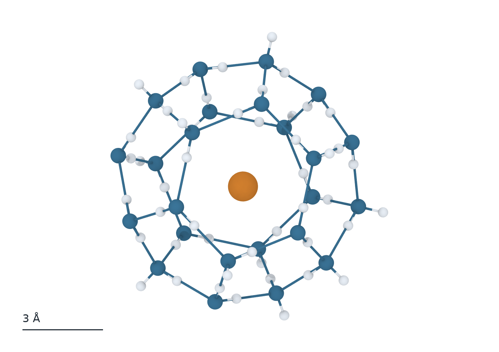

クラスレートハイドレート
水分子は水素結合でつながり, 内部に空間を持つかごを作ります. メタンや二酸化炭素などがかごに入って結晶をつくると, クラスレートハイドレートと呼ばれます. 水の骨格の組み方によって, 一つの結晶に大きさや形の異なるかごが現れます.
当研究室では, メタンがかごの中でどのように振動するかを第一原理分子動力学で解析してきました. 第一原理分子動力学では, 電子状態から原子に働く力を計算します. 小さいかごと大きいかごに入った分子の運動を比較し, 分光測定で見える信号を分子の動きと結び付けます.
結晶が育つ過程では, 水の局所配置から氷・液水・ハイドレートを識別します. 大きな計算系では機械学習力場も用い, かごに入ったガスの割合と, 結晶ができる過程を調べます.
研究の意義と応用
混合ガスからCO₂を分離するには, 水のかごにCO₂をどれだけ優先して取り込めるかが重要です. 取り込み量は回収できるガスの量に, 取り込みの速さは処理時間に関わります. かごの形とガスの入りやすさを結び付けることで, 分離に適した結晶や温度・圧力の候補を絞れます.
セミクラスレートハイドレートを冷熱の貯蔵に使う場合は, 結晶が分解して液体に戻るときに吸収する熱を利用します. 使いたい温度で相変化することに加え, 冷却中に結晶ができるまでの時間も運転に関わります. 結晶の安定性と核生成・成長を分けて理解することは, 蓄冷材料や運転条件を比較する基礎になります.
キーワード: 水素結合, ゲスト分子, ケージ占有率, 機械学習力場
論文・関連文献
- Hiratsuka et al., J. Chem. Phys. 136, 044508 (2012)
かごに入ったメタンの振動を第一原理MDで解析した共著論文. - Takahashi & Hiratsuka, Cryst. Growth Des. 23, 4815–4824 (2023)
水分子の局所配置から氷とハイドレートを識別した共著論文. - イオン性ハイドレートの結晶構造とCO₂分離性能
結晶構造の異なる材料で, CO₂の選択性と取り込み量を比較した関連論文. - 空調用蓄冷材を対象としたセミクラスレートハイドレートの生成実験
相変化温度や結晶が生じるまでの時間を測定した関連論文.


CO₂ハイドレートのかごができて増える過程
計算開始から300 nsまで, 同じ水分子とCO₂分子を固定した視点で追います. 300 ns時点で面を共有してつながった36個のかごを対象に, 各時刻で閉じていた数を示しています. 0 nsで0個, 100 nsで4個, 200 nsで13個, 300 nsで36個です.
計算条件は245 K, 40 MPa. 数は最終構造から選んだ36個のかごを対象に, 平均化前の座標から判定しています. 動画では水の酸素の表示位置だけを2 ns幅で平均しています.